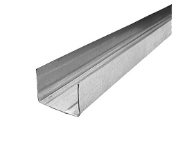
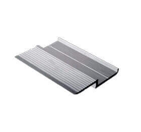

Монтаж панелей
Монтаж стеновых панелей методом приклеивания, возможен только на ровные стены независимо от их покрытия (кирпич, штукатурка, гипсокартон и т.д.). Монтаж панелей осуществляется после законченных работ по монтажу дверных и оконных блоков, узлов коммуникации и полов.
Используемые материалы:
Стеновые панели Ласпан со скрытой кромкой
Изготавливается на заказ
 Макс. размеры 1200x3000 мм
Макс. размеры 1200x3000 мм
L(F)-профиль для защиты внешних углов и примыканий к дверным проемам
 Окрашиваются под цвет панелей
Окрашиваются под цвет панелей
Подвес прямой для ПП
 Размеры 60х27 мм
Размеры 60х27 мм
Профиль потолочный (стоечный) ПП
 Размеры 60х27 мм
Размеры 60х27 мм
Направляющая горизонтальная НПП

Размеры 28х27 мм
Z-образный
направляющий профиль

направляющий профиль
А также:
Дюбель гвозди 6х40
Саморезы 3,5х11 (клоп)
Саморезы с прессшайбой 3,5х11
Просекатель (необязательно)
Клей